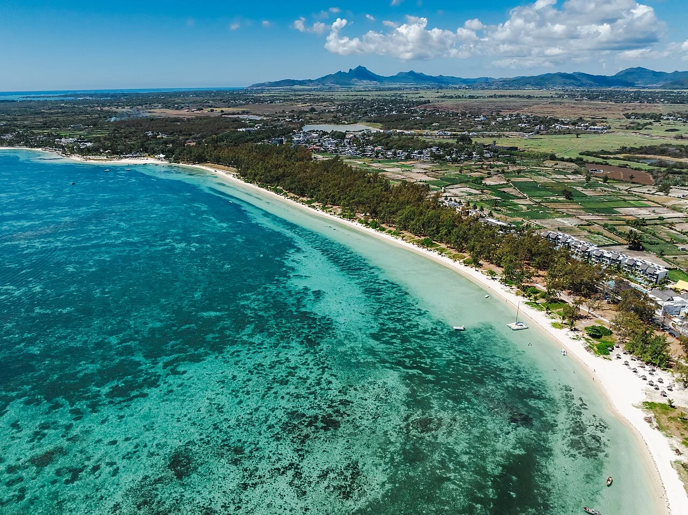

Belle Mare — plage publique
Flacq, Maurice · baignade, snorkeling

Plage publique de la côte est de Maurice, longue de plusieurs kilomètres et protégée par une barrière de corail. Le Routard décrit un lagon calme et cristallin, ombragé par des filaos. Snorkeling Report la dit sauvage et relativement peu fréquentée : une partie de la plage est publique, l’autre occupée par des hôtels.
- Lieu
- Flacq, Maurice
- Niveau
- Variable selon les conditions
- Activités
- baignade, snorkeling
- Type d'eau
- Mer / océan
- Coordonnées
- -20.19, 57.78 (position approximative du secteur)
Dangers à connaître
- Beaucoup de bateaux et de jet-skis circulent dans le lagon : palmer depuis le bord n’est pas conseillé (Snorkeling Report).
- Des cyclones passent parfois entre janvier et mars. Ils perturbent la météo environ trois jours, avec de fortes pluies (Wikipédia).
Le conseil d'Ocean Buddy
Pour voir le récif, qui commence à environ 500 m de la plage, monte à bord d’un bateau : des guides et des pêcheurs proposent la sortie sur place (Snorkeling Report).
Ouvrir dans Ocean Buddy Télécharger sur l'App Store
Source : Fiche Ocean Buddy · décembre 2026 · d’après le Routard, Snorkeling Report et Wikipédia · à vérifier localement.